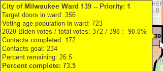
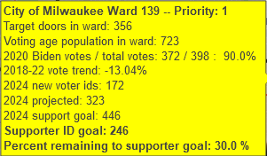
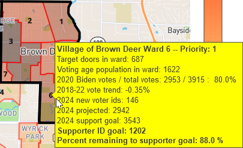
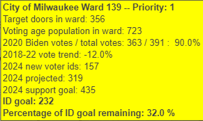
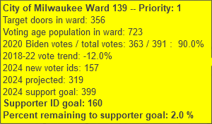

Version of 10/31/24 11:30 AM
- No changes since last version.
Version of 10/30/24 9:00 AM
- Images are colormapped by percentage completed rather than percentage remaining.
- Percentage completed is is expressed as a percentage, by dividing column T ("#contacts done") by column S ("#goal") of the spreadsheet "SOTV Turf Assignments"
- A new colorbar is used.

Version of 10/28/24 9:00 AM
- The algorithm for computing the support goal, supporter ID goal, etc. is unchanged.
- The values for "2024 voter IDs" come from column T ("#contacts done") on sheet "Sheet1" of the "SOTV Turf Assignments" spreadsheet.


Version of 10/18/24 8:00 PM
- The algorithm for computing the support goal, supporter ID goal, is restored to the 9/26/24 version.
- The supporter goal is 120% of Biden's 2020 vote.
- It now uses the percentage remaining to the supporter ID goal to color the maps.
- The billboard is edited, see the image below.

Version of 10/18/24 3:00 PM
- The algorithm for computing the support goal, supporter ID goal, is restored to the 9/26/24 version.
- It now uses the percentage remaining to the supporter ID goal to color the maps.
- The billboard is edited, see the image below.
